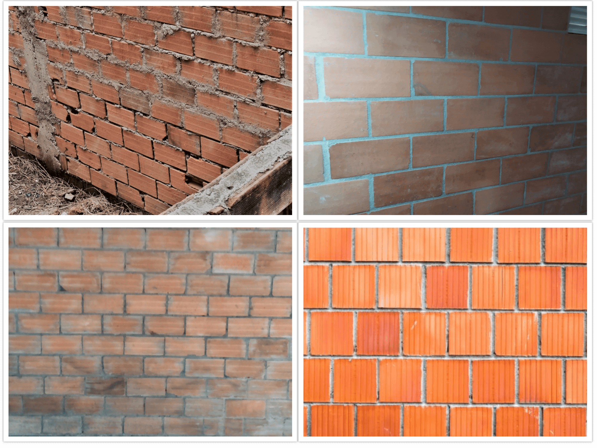
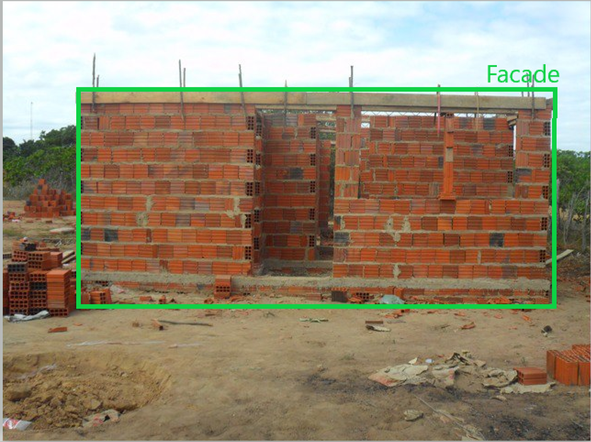
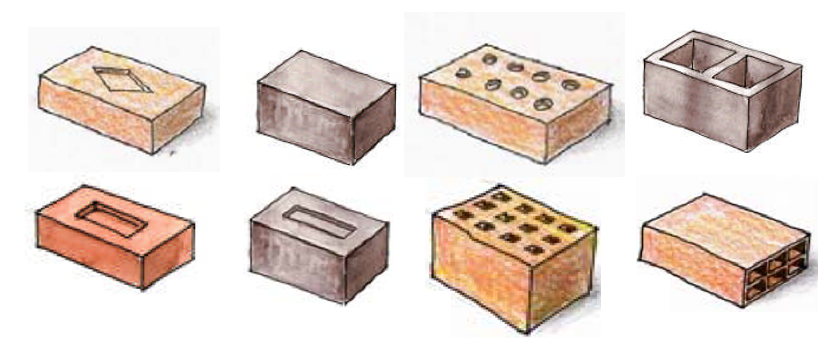
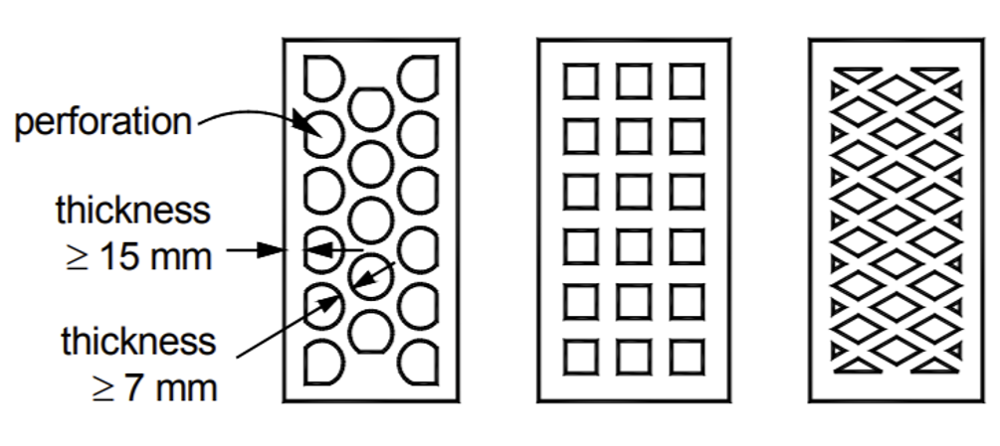
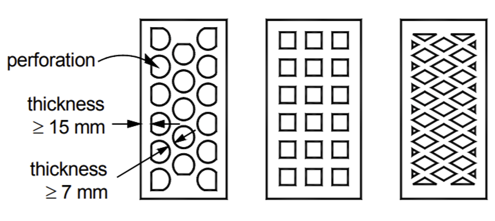
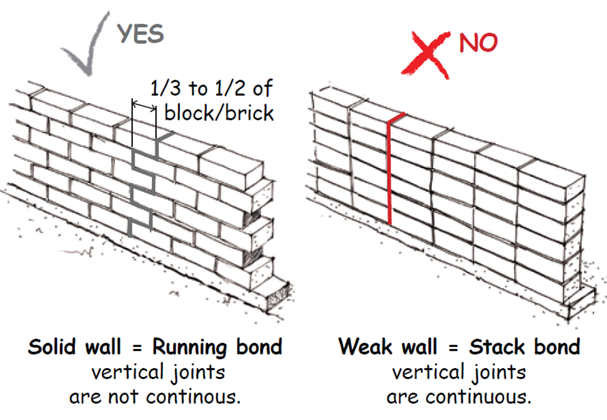
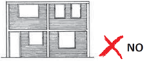
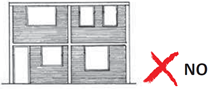
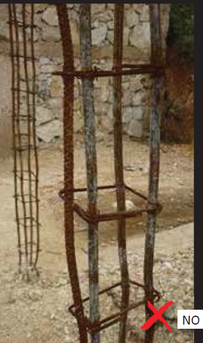

Call to Action for Developers
We would like to invite developers and other interested folks to contribute to further development of this project and help make ISAC-SIMO a robust tool with a wide catalog of quality checks accessible by homeowners, builders, and local authorities to enable safe construction practices in areas with lack of technical support. The potential areas for further developments are listed below.
Short term updates:
-
User interface improvements:
- Suggest improvements to the UI of the mobile app to make the process as intuitive and user-friendly for non-technical users.
- Suggest improvements or new features to the dashboard to enable a wider use of the platform and cater to different users like developers, project managers, general users etc.
-
Crowdsource image dataset for ML training:
- Contribute image dataset for different construction elements (eg. walls and type of walls, openings, rebar cages, rebar stirrups etc.) that can be used to train object detection or segmentation models to detect and extract key construction elements from a construction site image. To contribute image dataset of construction elements, both ISAC-SIMO mobile app or the dashboard can be used by following these guidelines.
-
Auto-perspective fix of wall / facade images:
- Support to automatically detect a skewed perspective in an image, and automatically fix the perspective of the image to front perspective. To detect the perspective, the segmentation mask obtained after passing the raw image through the unet model can be used instead of the raw image to make it easier to detect a skewed perspective in an image.
 Figure :
Top row - Images that need a perspective fix
Bottom row - Images that don’t need a perspective fix
 Figure : Segmentation mask obtained from trained Unet model
Figure : Segmentation mask obtained from trained Unet modelTop row - Images needing perspective fix
Bottom row - Images that don’t need perspective fix
To download these images for trial, click here.
Long term updates:
In the long term, we envision ISAC-SIMO to contain a wide catalogue of checks that can be deployed in multiple contexts around the world to help bridge the gap in technical support to homeowners, builders, and local authorities to assist with the construction of disaster resilient confined masonry houses. To create a seamless experience for the users, we would need to be able to detect key construction elements from photos of construction sites taken at different stages of construction, and assess the detected elements for compliance or non-compliance.
In order to achieve that, we would need to:
1) train a wide variety of models that can identify and extract key construction elements from construction site images, and
2) classify or process the images to assess the quality of the identified construction element as per the recommended guideline.
We would like to invite interested developers and other supporters of this project to contribute to the development of more quality checks in the long term with the following activities:
- Crowd-source image dataset to train new models and create new checks
- Train object detection models to identify key construction components from construction site images
- Train new machine learning models or contribute python scripts to help extract key features in the images of construction elements and assess their quality as per the recommended guidelines
To implement the checks, we can use a combination of machine learning models (such as object detection, segmentation, classification models) along with python scripts to carry out image processing and compute the final result of an assessment.
We can thereby implement a three-step pipeline in the backend for each check:
1) Object Detection: Implement an object detection model to detect the construction element of interest from an image of a construction site.
2) Image Pre-processing: Implement a pre-processing python script to extract the bounding box corresponding to the detected construction element and pre-process the image using a pre-trained deep learning model or image processing functions, as appropriate for the check.
3) Post-processing: Implement a post-processing python script to analyze the segmentation mask or the processed image to extract key features and compute compliance or non-compliance as per the check requirements using machine learning models or python.
The list of construction elements to be detected and the catalogue of quality checks that can be implemented for confined masonry houses are detailed in the next section.
Object Detection:
Given enough image dataset, we can train and deploy object detection models to identify key construction elements from construction site images. The key components of a confined masonry construction is shown in the figure below.
 Figure: Key components and characteristics of a confined masonry building (Schacher 2015)
Figure: Key components and characteristics of a confined masonry building (Schacher 2015)
Out of the confined masonry building components, we can train object detection models to identify the elements listed in the table below.
| # | Element to be detected | Example(s) | Description |
|---|---|---|---|
| 1 | Facade |
  |
Detect a facade of a building |
- Identify type of construction / building (Concrete block construction, brick construction, clay or mud house, stone house, timber house etc.)
- Detect storeys / multiple floors
- Walls and type of walls (brick walls, plastered walls, concrete block walls etc. to identify the type of wall being assessed)
- Identify different types of blocks or bricks (eg. solid concrete units, hollow concrete blocks, solid clay bricks, hollow clay brick, perforated clay brick, stone etc.)
- Detect doors, windows, and openings
- Confining beams and columns
- Detect presence or absence of confining elements around openings (eg. sill & lintel bands)
- Rebar Stirrups
- Rebar Cage elements
- Detect roof and type of roof
Develop more quality checks:
| # | Check | Example | Engineering Requirement(s) | Applicability |
|---|---|---|---|---|
| 1 | Masonry unit type |  (Hollow clay block, Hollow concrete block, solid clay block, solid concrete block, perforated clay block, etc.) | ||
| 2 | Percentage of holes in hollow blocks |
 

|
For hollow or perforated masonry units, check for ratio of holes to horizontal surface | |
| 3 | Bond pattern check for concrete blocks |  | ||
| 4 | Mortar thickness check for concrete blocks: | |||
| 5 | Wall thickness |

|
||
| 6 | Solid wall area percentage | |||
| 7 | Detect shear walls on each facade (sections without openings) | |||
| 8 | Vertical continuity of openings (in case of multi-storey house) |
 

|
||
| 9 | Presence or absence of confining elements around openings | |||
| 10 | Distance from corner of wall to opening | |||
| 11 | Toothing in wall column intersections |


|
||
| 12 | Rebar Cage Quality: Detect poor quality rebar based by identifying bent longitudinal rebars |  | ||
| 13 | Rebar Cage Stirrup Spacing |
Note: This is not a comprehensive list of checks but includes checks that can be done visually.
Additional functionalities:
Additional functionalities that could enhance the performance and improve applicability of the tool in future implementations.
- Support for streaming and video processing
- Implement AR for providing estimated measurements
-
Add more features in the mobile app:
- Offline functionality
- Third Party Integration
- Multiple language support
- Auto-object detection of construction elements
- Detects Objects when capturing images without having to choose the check type manually.
- Real time object detection when capturing picture
- Detects all objects (wall, rebar, brick etc.) in the camera screen in real-time and shows squares around them. And Be able to toggle on/off.
- Quality Check via Video Recording
- Support the Quality Check to be performed by recording video of the construction site. Instead of only Photos, we can also allow recording videos. The Back-end API exists but might need optimization.
- Store and Review previous test results
- For Guest as well as Logged in users, add a feature to store previous tests performed in that device to review later. Currently we only see once.
-
Web platform improvements:
- More Model Format Support:
- Currently ISAC-SIMO supports h5, hdf5, keras and standard python3 scripts. It can be upgraded to support Pickled Python (pkl), Petastorm, Protobuf (pb), Apple ML Model (mlmodel), Torch Script (pt) and other popular machine learning file stores and formats.
- Support Multiple Image URLs:
- When testing photos against checks, users can either upload multiple image files or provide image url (currently only single). We can add features to support multiple image urls and store them in a single row instead of having a single image url per row in test result. As we have to fetch multiple images from multiple image urls, it might cause an asynchronous problem.
- Edit Python3 Scripts / Offline Model directly from Web Application:
- Everytime we need to make some changes to our python3 scripts, pre & post processor we have to edit the offline model and upload a new file every single time. We can have a feature to securely edit Python Scripts directly from the web application and immediately apply the changes.
- Rate Limiting Per Action:
- Currently, rate limiting can be handled by web servers (Nginx, Apache). We can have a feature to rate limit users based on logged-in user ID or IP Address in our application. The Rate Limit can be applied separately for separate features / modules. For Example, we can rate limit crowdsource upload per minute, but keep the rate-limit separately for other parts of the application.
- Captcha Integration:
- We can integrate Captcha for different actions within our web and mobile applications. We can add captcha verification for registration, running image tests, crowdsource upload, contribution submission etc.
- More Model Format Support: